Where's Waldo Lady - Wenda
Wenda is the female companion in the Where's Waldo universe, often called "the Where's Waldo lady" by fans. As Waldo's traveling partner and friend, Wenda brings her own unique style and personality to the series. This comprehensive guide explores everything about Wenda – her appearance, role in the books, and how she compares to Waldo himself.
Who is Wenda?

Wenda was introduced to the Where's Waldo series in the book "The Ultimate Fun Book" and has appeared in numerous books since. She serves as Waldo's companion and fellow adventurer, joining him on his travels around the world and through time. While Waldo is the star, Wenda has become an equally beloved character with her own dedicated fan following.
The character provides representation for female readers and adds another layer of challenge to the search-and-find gameplay. Just like Waldo, Wenda can be difficult to spot in crowded scenes, requiring careful observation and patience to locate.
Wenda's Appearance and Style
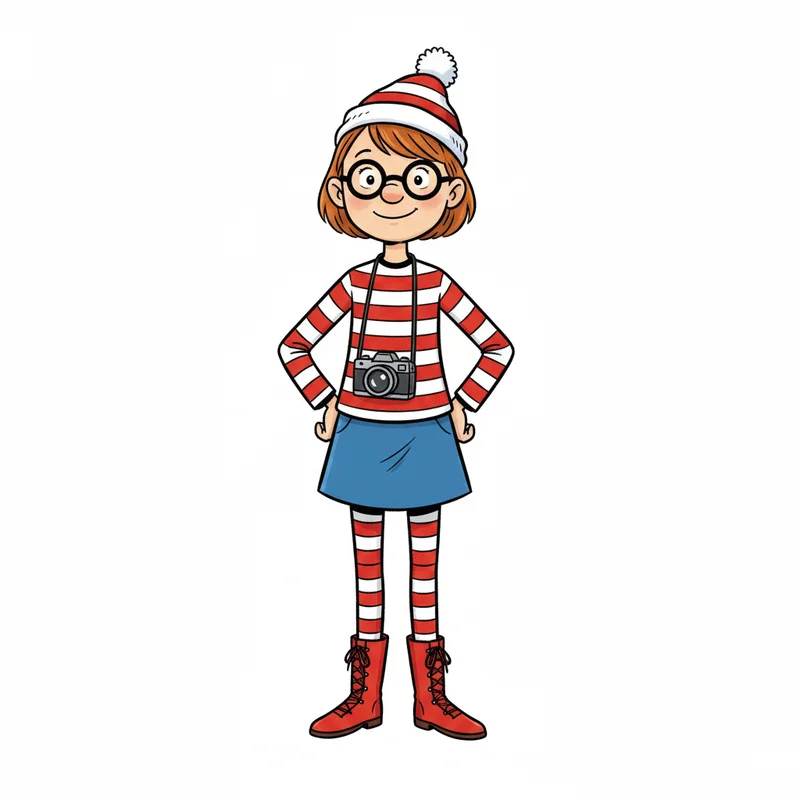Wenda's distinctive look makes her recognizable while still presenting a search challenge. Understanding her appearance helps readers spot her more easily.
Clothing and Outfit
Wenda's signature outfit includes several key elements:
- Red and white striped shirt: Similar to Waldo's iconic stripes, maintaining the series' aesthetic
- Blue skirt or dress: Instead of jeans, Wenda typically wears a skirt, distinguishing her from Waldo
- Red and white striped socks or stockings: Adding to the coordinated striped theme
- Blue shoes: Matching her skirt
Accessories
Wenda's accessories are similar to Waldo's but with subtle differences:
- Round glasses: Same style as Waldo's iconic specs
- Red and white striped hat: Often with a pom-pom like Waldo's beanie
- Camera: Wenda frequently carries a camera, emphasizing her role as a traveler and documenter
Physical Appearance
Wenda is drawn with distinctive features that help readers identify her:
- Feminine hairstyle, often with bangs or hair visible under her hat
- Friendly, smiling expression
- Similar height to Waldo
- Slender build consistent with other book characters
Where to Get Your Wenda Costume
Ready to dress up as Wenda? Check out these great costume options to complete your look.
Disguise Official Wenda Costume
The animated series inspired look. Iconic and recognizable styling.
Classic Stripe Set
Includes shirt, beanie, and glasses. Perfect for an easy DIY costume.
Accessories Kit
Just the essentials: hat, glasses, and socks. Add your own skirt!
Differences Between Waldo and Wenda
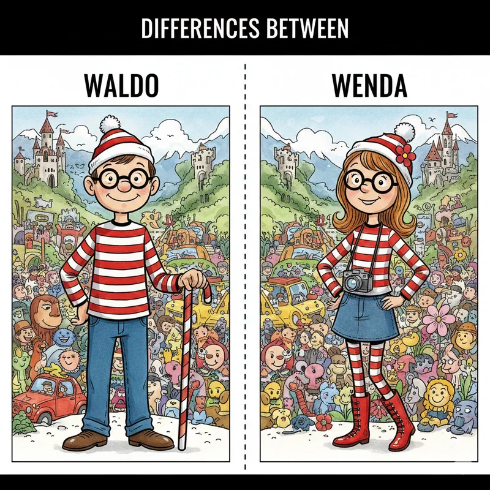While similar in many ways, several key differences distinguish these two characters:
Visual Differences
| Feature | Waldo | Wenda |
|---|---|---|
| Bottom wear | Blue jeans | Blue skirt |
| Accessories | Walking stick | Camera |
| Hair | Usually hidden under hat | Often visible (bangs or sides) |
| Build | Standard cartoon male | More feminine features |
Search Difficulty
Interestingly, many readers find Wenda slightly easier to spot than Waldo because of her distinctive skirt. However, this depends on the scene and individual search strategies. In some contexts, the skirt makes her more visible, while in others it blends into the background.
Books Featuring Wenda
Wenda appears in several Where's Waldo books, though not all of them. Notable appearances include:
- Where's Waldo? The Ultimate Fun Book
- Where's Waldo? The Wonder Book
- Where's Waldo? The Great Picture Hunt
- Where's Waldo? The Incredible Paper Chase
- Various activity and sticker books
Check the book's introduction or character guide pages to see if Wenda appears in that particular volume.
Real-Life Wenda Inspiration
Get inspired by these creative fans rocking their Wenda style in real life! From group costumes to solo adventures, see how others bring the character to life.
 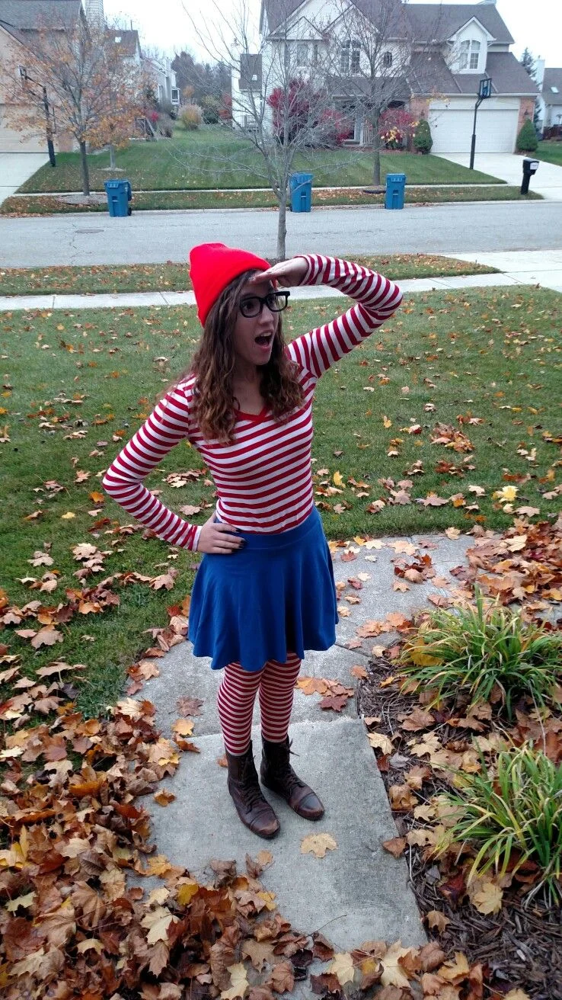
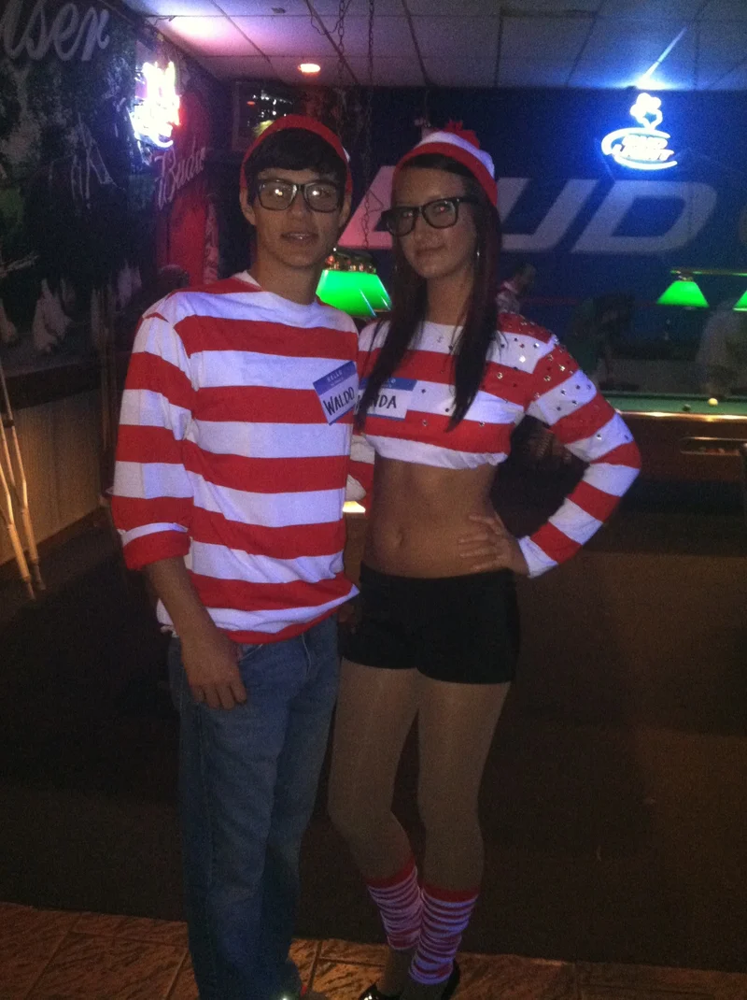
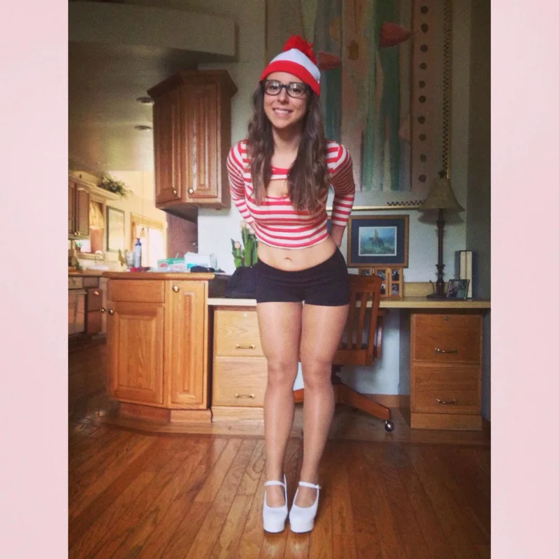
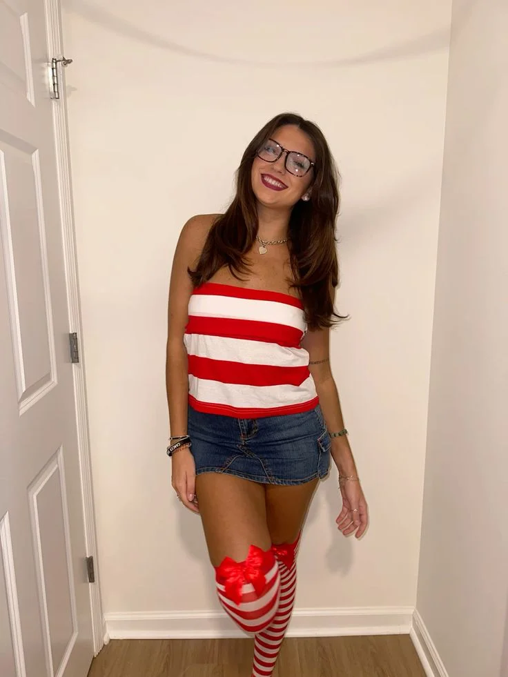
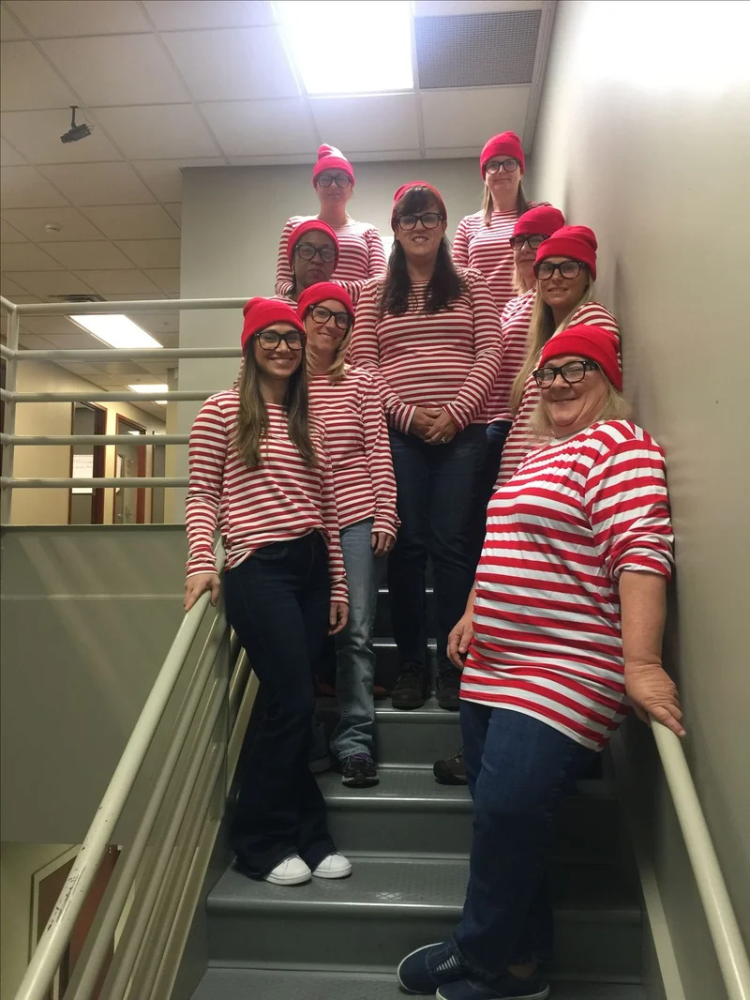
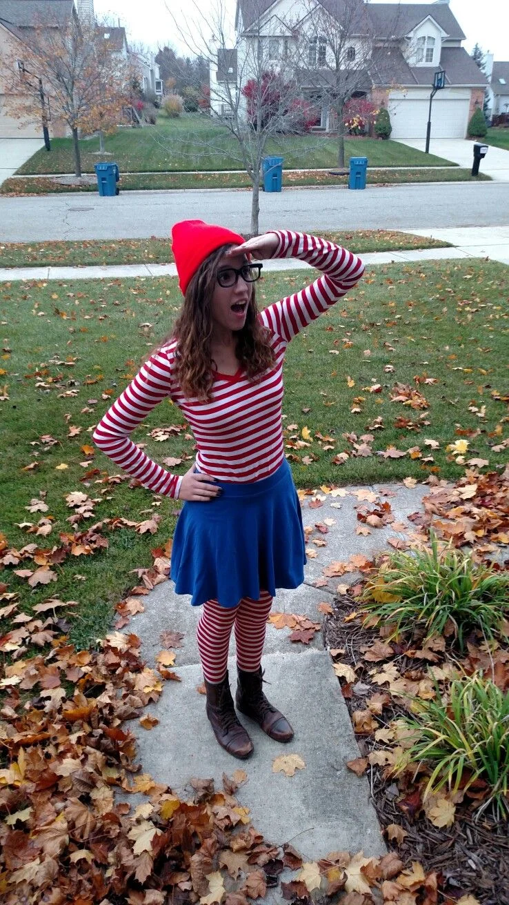
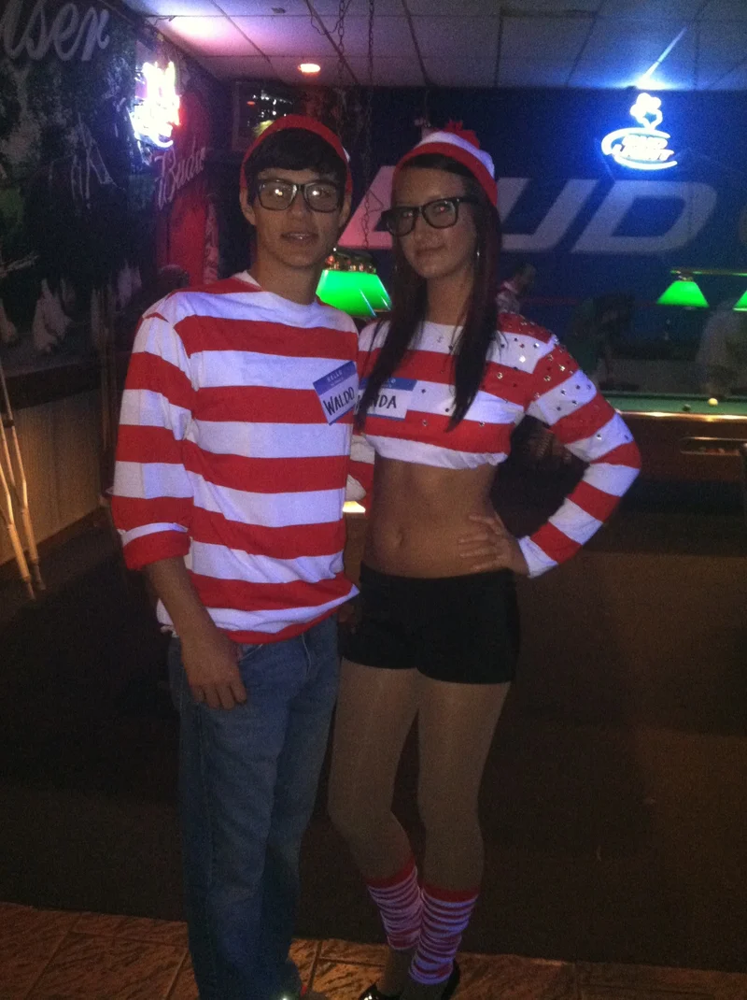
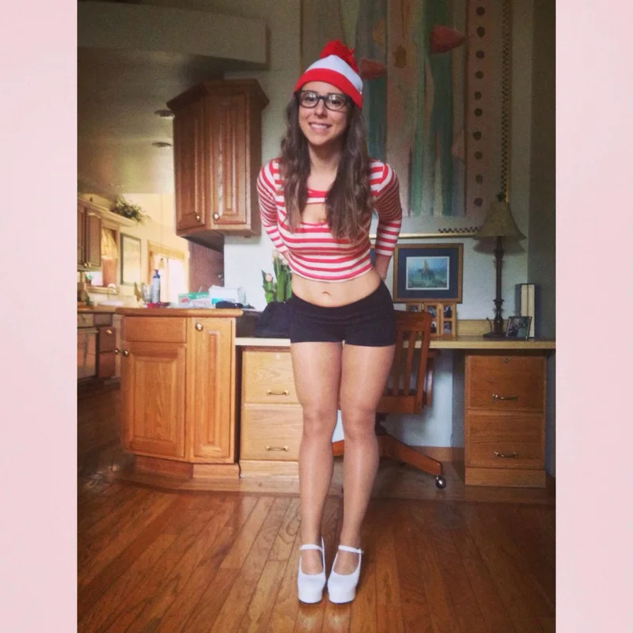
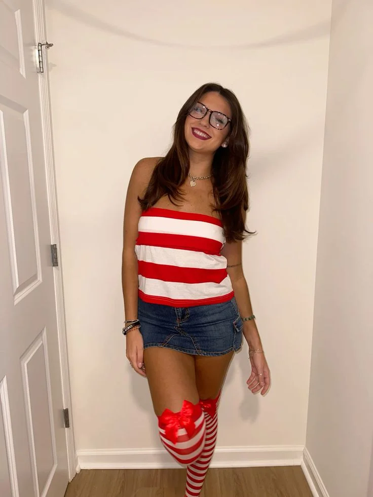
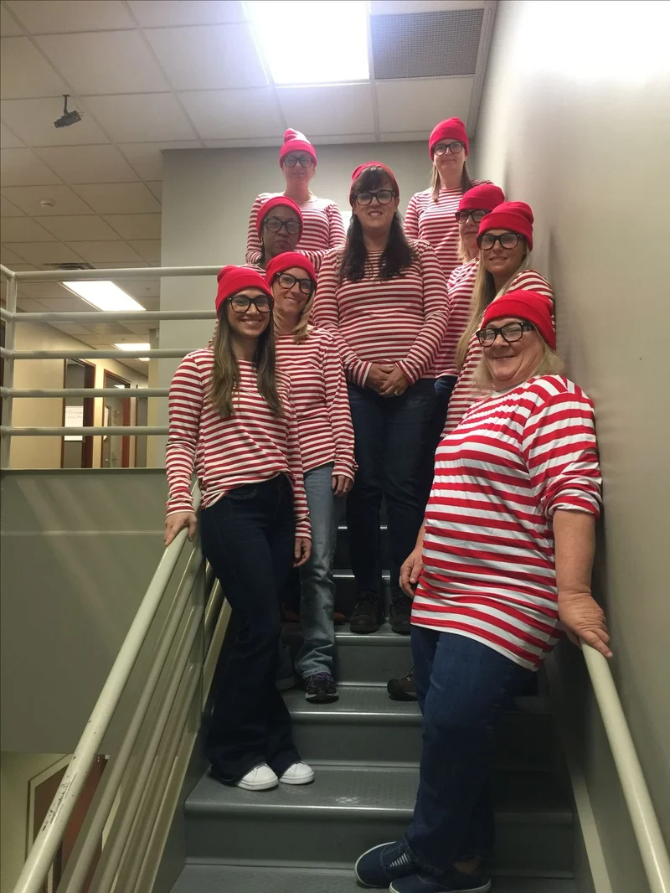
Start Searching for Wenda
Now that you know all about Wenda – the Where's Waldo lady – you're ready to search for her in the books! Remember to look for her distinctive blue skirt, camera, and red and white stripes. Finding both Waldo and Wenda doubles the fun and challenge of every page. Happy searching!